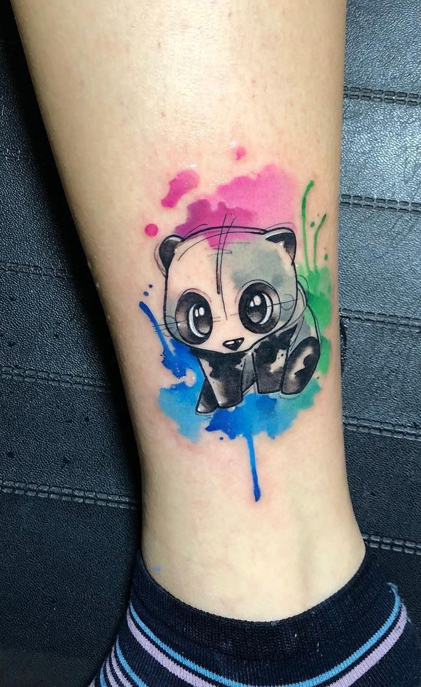

Water Color tattoos
About water color tattoos
- Watercolor tattoo designs are meant to have the same opaque look as watercolor paint on paper.
- These tattoos tend to have soft-looking edges and plenty of color (often pastels).
Common Imagery for this Tattoo Style:
- Animals and birds
- Characters
- Flowers
Rules for watercolor tattoos:
- To “fade out” your colors, you can mix your ink color with something like Foundation Flesh (by Fusion Ink) or similar to your client’s skin tone. This will help the color appear lighter without looking washed out.
- Include some line work so the design is still easy to read over time as the ink fades and spreads
- Using whip shading and pendulum shading will help you create gradual feathered edges.
